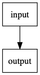
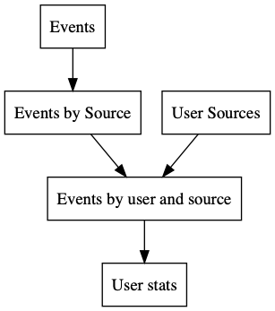

Table of Contents
1 Project deps
{:deps
{fundingcircle/jackdaw {:mvn/version "0.6.0"}
;;org.apache.kafka/kafka-streams {:mvn/version "2.1.0"}
;;org.apache.kafka/kafka-streams-test-utils {:mvn/version "2.1.0"}
org.clojure/clojure {:mvn/version "1.10.0"}
org.clojure/tools.logging {:mvn/version "0.4.1"}}
:mvn/repos
{"confluent" {:url "https://packages.confluent.io/maven/"}}
:paths
["src" "test" "dev"]
:aliases
{:test {:extra-deps {com.cognitect/test-runner
{:git/url "https://github.com/cognitect-labs/test-runner.git"
:sha "209b64504cb3bd3b99ecfec7937b358a879f55c1"}}
:main-opts ["-m" "cognitect.test-runner"]}}}
2 Confluent tools
2.1 Manage Confluent tools on the REPL
(ns confluent "Functions to start and stop ZooKeeper and Kafka. These functions require the Confluent Platform CLI which can be obtained from `https://www.confluent.io/download/`. WARNING: Quitting the REPL will not stop ZooKeeper and Kafka. Before exiting, you must invoke `confluent/stop`. Otherwise, run `confluent destroy` from the command line." (:require [clojure.string :as str] [clojure.java.shell :refer [sh]])) (defn not-up "Takes `service` and returns true if the service is down" [service] (->> (:out (sh "confluent" "status")) str/split-lines (keep (fn [x] (re-find (re-pattern (str service " is.*")) x))) first (re-find #"DOWN") boolean)) (defn stop "Starts ZooKeeper and Kafka." [] (sh "confluent" "destroy") (println "schema-registry is down") (println "kafka is down") (println "zookeeper is down")) (defn start "Starts ZooKeeper and Kafka." [] (with-out-str (stop)) (doseq [s ["zookeeper" "kafka" "schema-registry"]] (do (while (not-up s) (sh "confluent" "start" s) (Thread/sleep 1000)) (println s "is up")))) (defn reset "Stops and starts ZooKeeper and Kafka." [] (stop) (start))
2.2 Start confluent platform
(confluent/start)
3 Helpful helpers
(ns user "your lovely home" (:require [clojure.java.shell :refer [sh]] [jackdaw.client :as jc] [jackdaw.client.log :as jcl] [jackdaw.admin :as ja] [jackdaw.serdes.edn :as jse] [jackdaw.streams :as j] [confluent]) (:import org.apache.kafka.common.serialization.Serdes)) ;;; ------------------------------------------------------------ ;;; ;;; Configure topics ;;; (defn topic-config "Takes a topic name and (optionally) key and value serdes and a partition count, and returns a topic configuration map, which may be used to create a topic or produce/consume records." ([topic-name] (topic-config topic-name (jse/serde))) ([topic-name value-serde] (topic-config topic-name (jse/serde) value-serde)) ([topic-name key-serde value-serde] (topic-config topic-name 1 key-serde value-serde)) ([topic-name partition-count key-serde value-serde] {:topic-name topic-name :partition-count partition-count :replication-factor 1 :topic-config {} :key-serde key-serde :value-serde value-serde})) ;;; ------------------------------------------------------------ ;;; ;;; Create, delete and list topics ;;; (defn kafka-admin-client-config [] {"bootstrap.servers" "localhost:9092"}) (defn create-topics "Takes a list of topics and creates these using the names given." [topic-config-list] (with-open [client (ja/->AdminClient (kafka-admin-client-config))] (ja/create-topics! client topic-config-list))) (defn re-delete-topics "Takes an instance of java.util.regex.Pattern and deletes any Kafka topics that match." [re] (with-open [client (ja/->AdminClient (kafka-admin-client-config))] (let [topics-to-delete (->> (ja/list-topics client) (filter #(re-find re (:topic-name %))))] (ja/delete-topics! client topics-to-delete)))) (defn create-topic "Takes a single topic config and creates a Kafka topic." [topic-config] (create-topics [topic-config])) (defn list-topics "Returns a list of Kafka topics." [] (with-open [client (ja/->AdminClient (kafka-admin-client-config))] (ja/list-topics client))) (defn topic-exists? "Takes a topic name and returns true if the topic exists." [topic-config] (with-open [client (ja/->AdminClient (kafka-admin-client-config))] (ja/topic-exists? client topic-config))) ;;; ------------------------------------------------------------ ;;; ;;; Produce and consume records ;;; (defn kafka-producer-config [] {"bootstrap.servers" "localhost:9092"}) (defn kafka-consumer-config [group-id] {"bootstrap.servers" "localhost:9092" "group.id" group-id "auto.offset.reset" "earliest" "enable.auto.commit" "false"}) (defn publish "Takes a topic config and record value, and (optionally) a key and parition number, and produces to a Kafka topic." ([topic-config value] (with-open [client (jc/producer (kafka-producer-config) topic-config)] @(jc/produce! client topic-config value)) nil) ([topic-config key value] (with-open [client (jc/producer (kafka-producer-config) topic-config)] @(jc/produce! client topic-config key value)) nil) ([topic-config partition key value] (with-open [client (jc/producer (kafka-producer-config) topic-config)] @(jc/produce! client topic-config partition key value)) nil)) (defn get-records "Takes a topic config, consumes from a Kafka topic, and returns a seq of maps." ([topic-config] (get-records topic-config 200)) ([topic-config polling-interval-ms] (let [client-config (kafka-consumer-config (str (java.util.UUID/randomUUID)))] (with-open [client (jc/subscribed-consumer client-config [topic-config])] (doall (jcl/log client 100 seq)))))) (defn get-keyvals "Takes a topic config, consumes from a Kafka topic, and returns a seq of key-value pairs." ([topic-config] (get-keyvals topic-config 20)) ([topic-config polling-interval-ms] (map (juxt :key :value) (get-records topic-config polling-interval-ms)))) ;;; ------------------------------------------------------------ ;;; ;;; System ;;; (def system nil)
4 Simple pipe topology example
4.1 Overview

4.2 Define topology
(ns pipe "This tutorial contains a simple stream processing application using Jackdaw and Kafka Streams. Pipe reads from a Kafka topic called `input`, logs the key and value, and writes these to a Kafka topic called `output`." (:gen-class) (:require [clojure.string :as str] [clojure.tools.logging :refer [info]] [jackdaw.streams :as j] [jackdaw.serdes.edn :as jse]) (:import [org.apache.kafka.common.serialization Serdes])) (defn topic-config "Takes a topic name and returns a topic configuration map, which may be used to create a topic or produce/consume records." [topic-name] {:topic-name topic-name :partition-count 1 :replication-factor 1 :key-serde (jse/serde) :value-serde (jse/serde)}) (defn app-config "Returns the application config." [] {"application.id" "word-count" "bootstrap.servers" "localhost:9092" "cache.max.bytes.buffering" "0"}) (defn build-topology "Reads from a Kafka topic called `input`, logs the key and value, and writes these to a Kafka topic called `output`. Returns a topology builder." [builder] (-> (j/kstream builder (topic-config "input")) (j/peek (fn [[k v]] (info (str {:key k :value v})))) (j/to (topic-config "output"))) builder) (defn start-app "Starts the stream processing application." [app-config] (let [builder (j/streams-builder) topology (build-topology builder) app (j/kafka-streams topology app-config)] (j/start app) (info "pipe is up") app)) (defn stop-app "Stops the stream processing application." [app] (j/close app) (info "pipe is down")) (defn -main [& _] (start-app (app-config)))
4.3 Define topology start stop
(require '[pipe]) (defn stop-pipe "Stops the app, and deletes topics and internal state." [] (when (and system (:pipe-app system)) (pipe/stop-app (:pipe-app system))) (re-delete-topics #"(input|output)") (alter-var-root #'system merge {:pipe-app nil})) (defn start-pipe "Creates topics, and starts the app." [] (create-topics (map pipe/topic-config ["input" "output"])) (alter-var-root #'system merge {:pipe-app (pipe/start-app (pipe/app-config))}))
4.4 Start/reset topology state
(stop-pipe) (Thread/sleep 1000) (start-pipe)
4.5 List topics
(list-topics)
4.6 List publish input
(publish (topic-config "input") "mundo")
4.7 Read from the output
(get-keyvals (topic-config "output"))
5 The flex app
5.1 Overview

5.2 Define topology
(ns flex "" (:gen-class) (:require [clojure.string :as str] [clojure.tools.logging :refer [info]] [jackdaw.streams :as j] [jackdaw.serdes.edn :as jse]) (:import [org.apache.kafka.common.serialization Serdes])) (defn topic-config "Takes a topic name and returns a topic configuration map, which may be used to create a topic or produce/consume records." [topic-name] {:topic-name topic-name :partition-count 1 :replication-factor 1 :key-serde (jse/serde) :value-serde (jse/serde)}) (defn app-config "Returns the application config." [] {"application.id" "flex-app" "bootstrap.servers" "localhost:9092" "cache.max.bytes.buffering" "0"}) (defn build-topology "" [builder] (let [event-stream (j/kstream builder (topic-config "events")) user-sources-table (j/ktable builder (topic-config "user-sources")) events-by-source (-> event-stream (j/map (fn [[_ v]] [(:source-id v) v])) (j/through (topic-config "events-by-source"))) events-by-user-and-source (-> events-by-source (j/left-join user-sources-table (fn [event user-source] (merge event user-source)) (topic-config "") (topic-config "")) (j/map (fn [[_ v]] [[(:user-id v) (:source-id v)] v])) (j/through (topic-config "events-by-user-and-source")))] (-> events-by-user-and-source (j/group-by-key (topic-config "")) (j/aggregate (constantly {:count 0 :sum 0}) (fn [acc [k v]] (-> acc (update :count inc) (update :sum #(+ % (:value v))) (merge (select-keys v [:name :user-id])))) (topic-config "user-stats")) (j/to-kstream) (j/to (topic-config "user-stats"))) builder)) (defn start-app "Starts the stream processing application." [app-config] (let [builder (j/streams-builder) topology (build-topology builder) app (j/kafka-streams topology app-config)] (j/start app) (info "flex is up") app)) (defn stop-app "Stops the stream processing application." [app] (j/close app) (info "flex is down")) (defn -main [& _] (start-app (app-config)))
5.3 Define topology start stop
(require '[flex]) (defn stop-flex "Stops the app, and deletes topics and internal state." [] (when (and system (:flex-app system)) (flex/stop-app (:flex-app system)) (.cleanUp (:flex-app system)) ;; clears internal state topics ) (re-delete-topics #"(events|events-by-source|events-by-user-and-source|user-sources|user-stats)") (alter-var-root #'system merge {:flex-app nil})) (defn start-flex "Creates topics, and starts the app." [] (create-topics (map flex/topic-config ["events" "events-by-source" "events-by-user-and-source" "user-sources" "user-stats"])) (alter-var-root #'system merge {:flex-app (flex/start-app (flex/app-config))}))
5.4 Start/reset topology state
(stop-flex) (Thread/sleep 1000) (start-flex)
5.5 List topics
(list-topics)
5.6 List publish input
(def user-1 (java.util.UUID/randomUUID)) (def source-1 (java.util.UUID/randomUUID)) (def source-2 (java.util.UUID/randomUUID)) (def user-2 (java.util.UUID/randomUUID)) (def source-3 (java.util.UUID/randomUUID)) (publish (topic-config "user-sources") source-1 {:name "step counter" :user-id user-1}) (publish (topic-config "user-sources") source-2 {:name "pushup counter" :user-id user-1}) (publish (topic-config "user-sources") source-3 {:name "step counter" :user-id user-2}) (publish (topic-config "events") {:event-id (java.util.UUID/randomUUID) :source-id source-1 :value 1 :timestamp (System/currentTimeMillis)}) (publish (topic-config "events") {:event-id (java.util.UUID/randomUUID) :source-id source-2 :value 2 :timestamp (System/currentTimeMillis)}) (publish (topic-config "events") {:event-id (java.util.UUID/randomUUID) :source-id source-3 :value 100 :timestamp (System/currentTimeMillis)}) (publish (topic-config "events") {:event-id (java.util.UUID/randomUUID) :source-id source-2 :value 100 :timestamp (System/currentTimeMillis)})
5.7 Read from the output
(get-keyvals (topic-config "events")) (get-keyvals (topic-config "user-sources")) (get-keyvals (topic-config "events-by-source")) (get-keyvals (topic-config "events-by-user-and-source")) (get-keyvals (topic-config "user-stats")) (get-keyvals (topic-config "flex-app-user-stats-changelog"))